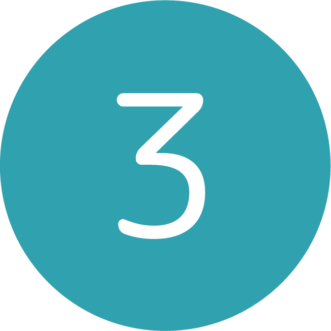

FLAG
2021 アプリケーション企画
-
-
作品紹介
落ち込んだ気持ちを共有するスマホアプリケーション「FLAG」です
デザイン人類学の授業で行った「ヒトありきの捉え方」で、
インタビューイ自身の問題を解決するために必要なことを考えました
「私ってだめだ、」という気持ちを素直に言葉にして共有することで
悩みや不安を1人で抱え込まず、前を向くきっかけを作ります
-
-
インタビューイ
三井りんぜさん 大学生
買い物をしたときに、レジで財布から小銭を出すのに手間取り、もたついてしまった。
結果、さらに焦ってしまい、かなりの時間がかかってしまった経験がある。
最近財布を小さいものに変えたため、そのせいでスムーズな会計ができなかったと考えている
-
-
制作過程
-
インタビューイの分析
インタビューイである三井さんの性格から財布を不便に感じた本当の理由を導きます
実際に三井さんが話している様子を映像で見ながら、財布や三井さんについての質問の回答、仕草などから分析を行いました
三井さんの「ポジティブ」と「ネガティブ」な面を見つけ性格を分析し、財布を不便に感じたときの三井さんの心境を詳しく調べます
分析の結果、財布を不便に感じた本当の理由は、「誰かの迷惑になってしまったと思い込み、自分自身をダメだと感じてしまったこと」
ではないかと結論づけました
-

-
解決方法の決定
三井さんのように、マイナスな出来事を抱え込まずに前向きな気持ちになるために必要なことを考え、
私は「言葉にすること/誰かに励ましてもらうこと」が必要だと結論づけました
その機会を設けるために落ち込んだ気持ちを投稿し共有するスマホアプリを作成することにしました
-
-
使用方法
-
POST
落ち込んだことを投稿します
落ち込んだ出来事の落ち込みレベル、内容、その投稿に対し
他のユーザーからのコメントを受け取るか受け取らないかを選択し、投稿します
投稿内容は長文にならないよう40文字以内になっています
また、投稿内容が誹謗中傷などに該当する場合、投稿することができません
-
-
TIME LINE
他のユーザーがニックネームで投稿したことを閲覧できます
「落ち込んでいる」内容の投稿を閲覧することによって
落ち込んでいるのは自分1人ではないことを実感できたり、
場合によっては、自分よりも落ち込んでいる人がいることに気づくことができます
投稿の右下にある旗のマークを押すと、投稿者にFLAGを送ることができ、
右上にある吹き出しのマークを押すと、投稿者にコメントを送ることができます
投稿に対し、誰かを励ますことができます
- 
-
FLAG
自分が今までに誰かに届けた「FLAG」の数を確認することができます
また、誰かが自身の投稿に「FLAG」やコメントすると内容を確認できますが
自分自身が「FLAG」された総数を確認することはできません
自分が励ましてもらえた数に囚われるのではなく、
自分がどれだけの人を励ましたのかを重要視し、
誰かの力になれていると感じることで、ユーザーの自信に繋げます

-

-
MY PAGE
今まで投稿した内容をカレンダーによって確認することができます
カレンダーにすることで、自分が落ち込んだ頻度を可視化し、
毎日嫌なことがあった訳ではないということも実感できます
なお、こちらの画面でも「FLAG」された総数を確認することはできません
-
-
使用ソフトウェア